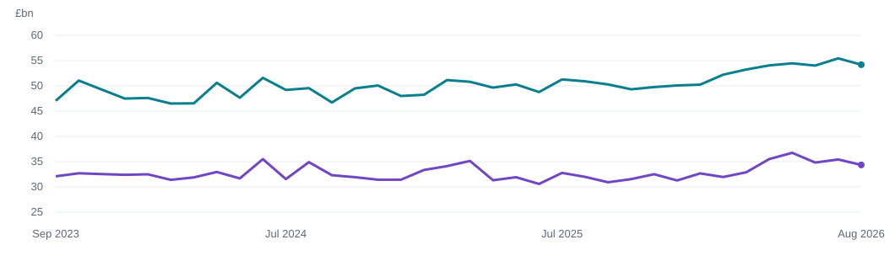

Goods exports
£34.352bn
−3.05% vs July 2026
A £178 million narrowing of the deficit. Two regions moving in opposite directions. Explore the trade movements behind August 2026.
Designed to give UK business leaders national trade context for further investigation into export markets and sourcing.
£34.352bn
−3.05% vs July 2026
£54.191bn
−2.27% vs July 2026
−£19.839bn
+£0.178bn vs July 2026
Monthly goods trade · £bn · seasonally adjusted

Preview generated from the validated dataset. Download the monthly values to inspect each observation.
−£1.705bn
Exports fell by £1.246bn and imports rose by £0.459bn. Both movements worsened the trade balance.
+£1.883bn
A £1.718bn fall in imports accounted for most of the improvement, alongside a £0.165bn increase in exports.
The deficit narrowed mainly because imports fell—not because overall exports grew. This is an arithmetic explanation of the balance, not evidence of the economic causes behind the movements.
| Region | Export contribution | Import contribution | Balance change |
|---|---|---|---|
| EU | −1.246 | −0.459 | −1.705 |
| Non-EU | +0.165 | +1.718 | +1.883 |
| Worldwide reconciliation | −1.081 | +1.259 | +0.178 |
Balance = exports − imports. Import contribution = previous imports − current imports. Worldwide is the reconciliation total, not an additional region to sum.
The UK recorded a goods deficit in all 36 months shown. Supporting notebook analysis also finds a £59.055bn deficit in June–August 2026, £2.451bn wider than in March–May. A single month should be interpreted alongside longer periods.
Select nine ONS series, extract monthly records, parse dates and numbers, and reshape to one row per month and market.
Check calendar coverage and duplicates. Reconcile exports minus imports and EU plus Non-EU. Preserve missing data.
Calculate monthly and annual changes, regional shares and contributions. Use a 12-month baseline for annual comparisons.
Build reporting-month DAX measures and Power BI visuals. Explain the results alongside their business relevance and limits.
Source: ONS UK trade, August 2026 and the MRET time-series dataset. Analysis and visualisation are an independent portfolio project.